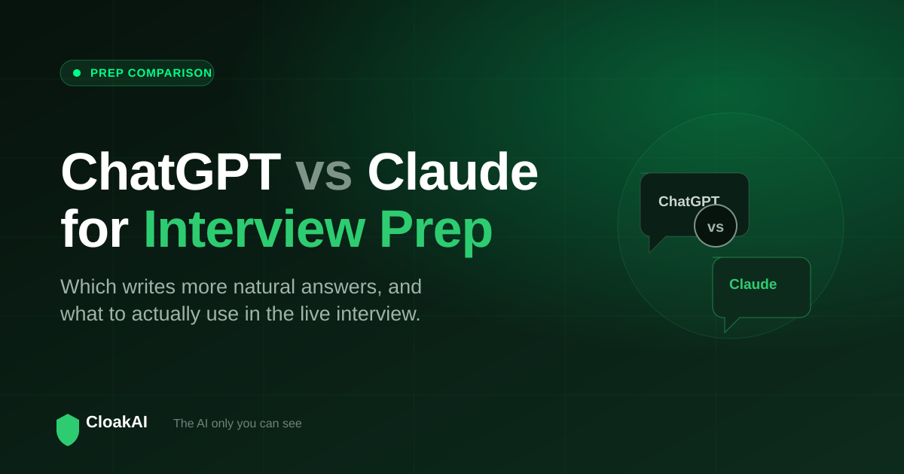
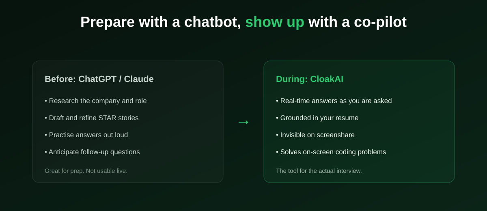

If you are preparing for interviews, you have probably asked the internet the same thing thousands of others are asking: is ChatGPT or Claude better for interview prep? Both are outstanding, and the honest answer is that the difference is smaller than the debate suggests. This guide compares them fairly for the specific job of interview preparation, explains which AI model is best for interview answers, and, just as importantly, clarifies what neither of them can do, which is help you during the live interview.
For prep, either works. Claude tends to write warmer, more natural answers, which suits behavioural and STAR responses. ChatGPT has a broader ecosystem and voice features. Use whichever you already pay for. Then remember: neither runs during the live interview, for that you need a real-time, invisible tool like CloakAI.
ChatGPT vs Claude for Interview Prep: The Honest Comparison
Both models are excellent writers and reasoners, so any comparison is about tendencies, not clear wins. Here is where each leans:
Claude: natural tone and long-form reasoning
Claude is often praised for producing writing that sounds human rather than templated. For interview prep, that matters: an answer that reads like a real person telling a story is far more usable than one that reads like a checklist. Claude is also strong at working through long, multi-part reasoning, which helps when you are refining a complex behavioural story or thinking through a system-design explanation. If your priority is answers that sound like you and do not scream "AI wrote this", Claude is a great first choice.
ChatGPT: ecosystem, speed, and voice
ChatGPT is highly capable at exactly the same tasks and brings a wider ecosystem: voice mode for spoken practice, a large library of integrations, and very fast iteration. If you want to rehearse out loud, or you already live inside the OpenAI ecosystem, ChatGPT is a natural fit. Its answers are strong; the tone is sometimes a little more "assistant-like" than Claude's, but good prompting closes most of that gap.
The tie-breaker: how you prompt and personalise
In practice, the quality of your prep depends more on what you feed the model than on which model you pick. Paste your real resume, the actual job description, and specific details about the company, and both ChatGPT and Claude will produce genuinely useful, personalised answers. Give either one a vague prompt, and both produce generic filler. Personalisation beats brand choice every time.

Which AI Model Is Best for Interview Answers?
People often go a level deeper and ask which specific model, across the latest OpenAI and Anthropic releases, produces the best interview answers. The realistic answer is that the strongest current models from both labs are all more than good enough; the ceiling on interview-answer quality is no longer the model, it is the context and prompting. A top model given your resume and role will always beat a slightly better model given nothing. So rather than chasing the newest model name, focus on the tool that best grounds answers in your background and delivers them when you need them.
The model wars make great headlines, but for interview prep the winner is almost always "whichever one you actually give your resume to."
New here? Try every feature free for 20 minutes, no signup and no card needed.
Try CloakAI for free 20-minute free trial · No credit card required · Windows 10 & 11Feature-by-Feature: ChatGPT vs Claude for Prep
| For interview prep | ChatGPT | Claude |
|---|---|---|
| Natural, human tone | Good | Excellent |
| Long-form reasoning | Excellent | Excellent |
| Voice practice mode | Yes | Limited |
| Ecosystem / integrations | Broadest | Growing |
| STAR / behavioural answers | Strong | Strong, natural |
| Coding explanations | Strong | Strong |
| Works during live interview | No | No |
What Neither ChatGPT Nor Claude Can Do
Here is the part most comparison articles skip. ChatGPT and Claude are chat applications. They have no real-time listening to your interviewer, no floating overlay, and no screenshare invisibility. To use either during a live interview, you would have to switch to another window or show it on screen, which the interviewer can see. That makes them outstanding preparation tools and unusable live tools. The moment the interview actually starts, both are on the sidelines.
Not ready to buy? Test every one of those features free for 20 minutes first.
Try CloakAI for free 20-minute free trial · No credit card required · Windows 10 & 11The Complete Setup: Prep Chatbot + Live Co-pilot
The strongest approach is not to choose one tool but to use the right tool at each stage. In the days before, use ChatGPT or Claude to research the company, draft and polish your STAR stories, and rehearse. On interview day, use a purpose-built live tool that runs during the call. That is where CloakAI fits: it listens to the interviewer in real time, generates answers grounded in the same resume you prepped with, solves on-screen coding problems, and stays invisible on screenshare. It is built on strong underlying models, so the answer quality you liked in prep carries into the live moment, where ChatGPT and Claude cannot follow.
Final Verdict: ChatGPT or Claude for Interview Prep?
For preparation, choose Claude if you want the most natural-sounding answers, and ChatGPT if you want the widest ecosystem and voice practice, but honestly, either will serve you well, and the real lever is feeding it your resume and role. Then accept the limit both share: they cannot help you live. Prepare with a chatbot, and show up on interview day with a real-time, invisible co-pilot. That combination, not the ChatGPT-versus-Claude debate, is what actually changes your results.
Line it up for your next interview and try the whole thing free for 20 minutes.
Try CloakAI for free 20-minute free trial · No credit card required · Windows 10 & 11